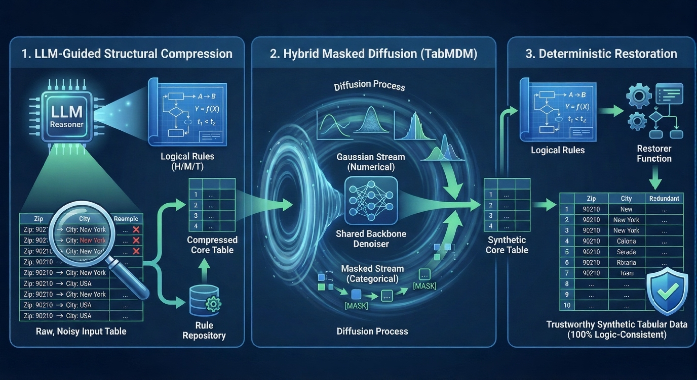
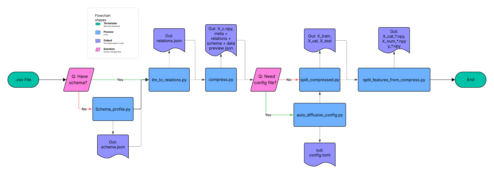
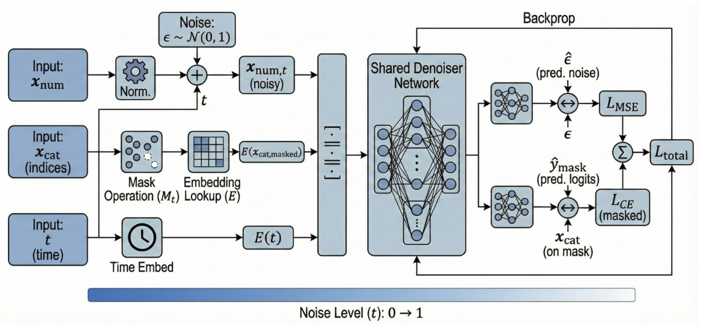
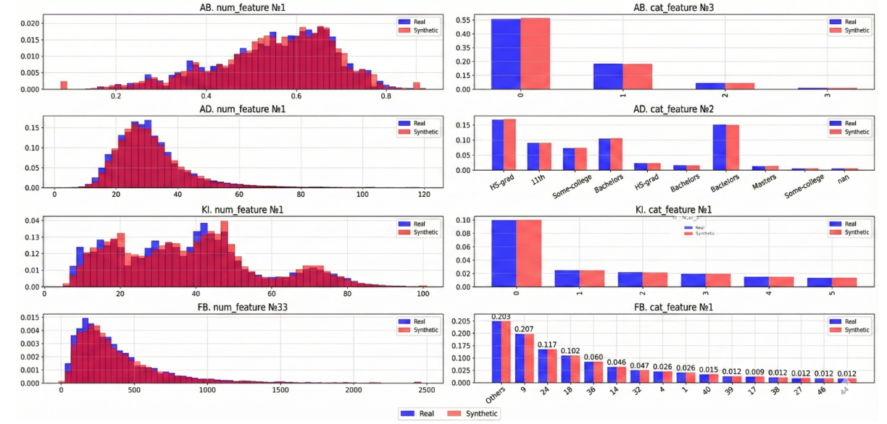

We introduce Compress–Generate–Restore (CGR), a compute-efficient framework for synthetic tabular data generation that separates logical reasoning from statistical modeling. An LLM acts as a symbolic reasoner to extract hierarchical, functional, and temporal relations and compress tables into a logically minimal core. A hybrid masked + Gaussian diffusion model learns this core, while a deterministic restorer reconstructs full tables, guaranteeing logic consistency by design. By enforcing logic structurally and improving robustness for mixed-type data, CGR provides a reproducible and trustworthy foundation for synthetic tabular data generation.

Synthetic data tables are increasingly used when real data cannot be shared due to privacy, legal, or ethical concerns. However, many existing synthetic data generators make simple but critical mistakes. For example, they may generate a city that does not belong to a given state, produce totals that do not match prices and quantities, or violate the natural order of timestamps. While these errors may seem small, they make synthetic data unreliable for real analysis, model training, or decision-making.
Most current approaches try to solve this problem using a single model that learns everything at once: both the statistical patterns in the data and the logical rules that connect different columns. Models based on GANs, diffusion, or even large language models can capture overall trends, but they often treat logical relationships as soft patterns rather than strict rules. As datasets become more complex or when models are tested in new settings, these logical violations become more frequent and harder to control.
This work explores a different idea: instead of forcing one model to learn both logic and statistics, we separate the two. We introduce the Compress–Generate–Restore framework, which first identifies the fixed logical structure in a dataset, then generates new data only for the truly independent parts, and finally restores the full table using deterministic rules. By doing so, we aim to produce synthetic data that is not only realistic, but also logically consistent by design.
If successful, this approach enables safer data sharing and more trustworthy synthetic datasets for applications such as healthcare, finance, and social science, where privacy is essential and logical errors are unacceptable.
Our three-step Compress–Generate–Restore (CGR) framework was designed to address a key weakness in existing synthetic data generators: they attempt to learn both statistical patterns and logical rules at the same time, which often leads to errors.
Our central idea is simple. Logical rules such as “a ZIP code determines a city” or “total equals price times quantity” are deterministic and should not be learned approximately by a neural network. Instead, we explicitly separate logical reasoning from statistical generation. This reduces the learning burden on the model and guarantees logical correctness by design.
Step 1: Compress (Logic Extraction). We use a large language model only as a reasoning tool to inspect the table structure and identify exact relationships, such as hierarchical dependencies, mathematical formulas, and temporal orderings. These rules are extracted once and stored explicitly.

Step 2: Generate (Statistical Modeling).
We train a diffusion model on a simplified version of the table that contains only independent columns.
Numerical values are generated using Gaussian noise, while categorical values are handled using a
masking-based approach instead of one-hot encoding. This makes training stable and scalable, even for
tables with many categories.

In Depth Explanation of workflow:
Numerical features are first normalized and then corrupted with Gaussian noise according to the timestep,
producing noisy values (x_num_t). In parallel, categorical features undergo a masking process:
a subset of category indices is randomly masked based on t and mapped to learnable embeddings
(x_cat_t), avoiding one-hot encodings and enabling scalability to high-cardinality features.
The timestep t is also transformed into a sinusoidal time embedding (t_emb), which conditions
the model on the current diffusion stage. The noisy numerical features, categorical embeddings, and time
embedding are concatenated and passed through a shared denoiser network (MLP or ResNet).
The denoiser has two output heads: one predicts the injected Gaussian noise for numerical features, and the other predicts logits for the masked categorical variables. Training minimizes a combined loss consisting of a mean squared error term for numerical reconstruction and a cross-entropy loss for categorical recovery.
Step 3: Restore (Deterministic Reconstruction). Finally, we reconstruct the removed columns using the extracted rules. Because this step is deterministic, every generated table automatically satisfies all known logical constraints.
What is new in this approach is not just the model, but the clear separation of responsibilities: logic is enforced explicitly, while the generative model focuses only on learning data distributions.
Based on prior work, we anticipated that diffusion models would struggle with large categorical spaces and that models relying on implicit logic learning would fail under distribution shift. In practice, both issues appeared.
Early attempts using one-hot encodings for categorical features were unstable and did not scale well. Similarly, allowing the generative model to learn logical rules directly led to frequent violations, especially for derived and hierarchical columns.
Switching to masked categorical diffusion resolved the scalability issues, and separating logical reasoning from statistical generation eliminated most logical errors. While some complex statistical dependencies remain challenging, the final framework consistently produces cleaner and more reliable synthetic data than existing baselines.
We evaluated our approach using six widely used public benchmark datasets spanning both classification and regression tasks. Our goal was to test whether separating logical reasoning from statistical modeling improves privacy, realism, and usefulness of synthetic data.
We measured success along three complementary dimensions: (1) privacy, using Distance to Closest Record (DCR); (2) statistical fidelity, using distributional and correlation metrics; and (3) downstream utility, using a Train-on-Synthetic, Test-on-Real (TSTR) evaluation for classification and regression tasks.
Our hybrid diffusion model (TabMDM) consistently outperformed or matched strong baselines such as TabDDPM and CTABGAN+.
| Model | AD | AB | FB | KI | IN | CH |
|---|---|---|---|---|---|---|
| CTABGAN+ | 0.400 | 0.081 | 0.666 | 0.390 | 0.124 | 0.235 |
| TabDDPM | 0.295 | 0.061 | 0.785 | 0.252 | 0.050 | 0.166 |
| TabMDM (Ours) | 1.001 | 0.037 | 1.414 | 0.195 | 0.047 | 0.167 |
| Model | AD | AB | FB | KI | IN | CH |
|---|---|---|---|---|---|---|
| CTABGAN+ | 0.011 | 0.008 | 0.078 | 0.021 | 0.025 | 0.019 |
| TabDDPM | 0.002 | 0.005 | 0.089 | 0.014 | 0.006 | 0.005 |
| TabMDM (Ours) | 0.001 | 0.005 | 0.007 | 0.062 | 0.0002 | 0.000 |
| Model | AD | AB | FB | KI | IN | CH |
|---|---|---|---|---|---|---|
| CTABGAN+ | 0.052 | 0.035 | 0.051 | 0.044 | 0.023 | 0.018 |
| TabDDPM | 0.019 | 0.007 | 0.006 | 0.060 | 0.018 | 0.017 |
| TabMDM (Ours) | 0.0001 | 0.0009 | 0.0002 | 0.0002 | 0.007 | 0.000 |
| Model | AB (R²) | AD (F1) | FB (R²) | KI (R²) | IN (R²) | CH (F1) |
|---|---|---|---|---|---|---|
| CTABGAN+ | 0.467 | 0.772 | 0.780 | 0.444 | 0.750 | 0.636 |
| TabDDPM | 0.550 | 0.795 | 0.855 | 0.833 | 0.792 | 0.693 |
| TabMDM (Ours) | 0.551 | 0.781 | 0.885 | 0.874 | 0.812 | 0.738 |
| Real Data | 0.556 | 0.815 | 0.910 | 0.907 | 0.814 | 0.679 |
Visual comparisons of real and synthetic feature distributions show strong overlap for numerical features and accurate frequency preservation for dominant categorical values. Minor discrepancies appear mainly in rare categories, which is consistent with quantitative divergence metrics.

Conclusion
In this project, we show that separating logical reasoning from statistical modeling leads to more reliable synthetic tabular data. By explicitly enforcing structure instead of relying on a single model to learn it implicitly, our approach produces data that is realistic, logically consistent, and useful for downstream tasks. Across multiple benchmark datasets, the method achieves strong results in privacy protection, distributional accuracy, and machine learning performance, while avoiding common logical errors seen in existing generators. These findings suggest that explicit structural enforcement is a practical and effective way to make synthetic data trustworthy for real-world use.
Another team should be able to clone the repository and reproduce all experiments
end-to-end using the provided configuration files and fixed preprocessing pipeline.
Logical relation extraction is deterministic, ensuring consistent results across runs.
Our work relies exclusively on widely used public tabular datasets and introduces no
new annotations. By demonstrating structure-aware generation without dataset
modification, we lower the barrier for adoption and enable broader comparison and reuse.
Synthetic data can pose risks such as privacy leakage, bias amplification, or misuse.
We explicitly address privacy through distance-based audits and emphasize that synthetic
data should complement, not replace, responsible data practices.
Current limitations include inference cost and challenges in modeling rare categorical
interactions. Future work includes soft constraint restoration, task-aware fine-tuning,
and extensions to temporal or relational datasets.
Deliver a logic-aware, compute-efficient, and privacy-audited
tabular diffusion framework with push-button reproducibility
and clear guardrails for real-world use.
Future Work & Broader Impacts
What next?
Reproducibility
Datasets and Research Impact
Ethical Considerations and Risk Mitigation
Limitations and Future Directions
Our Goal